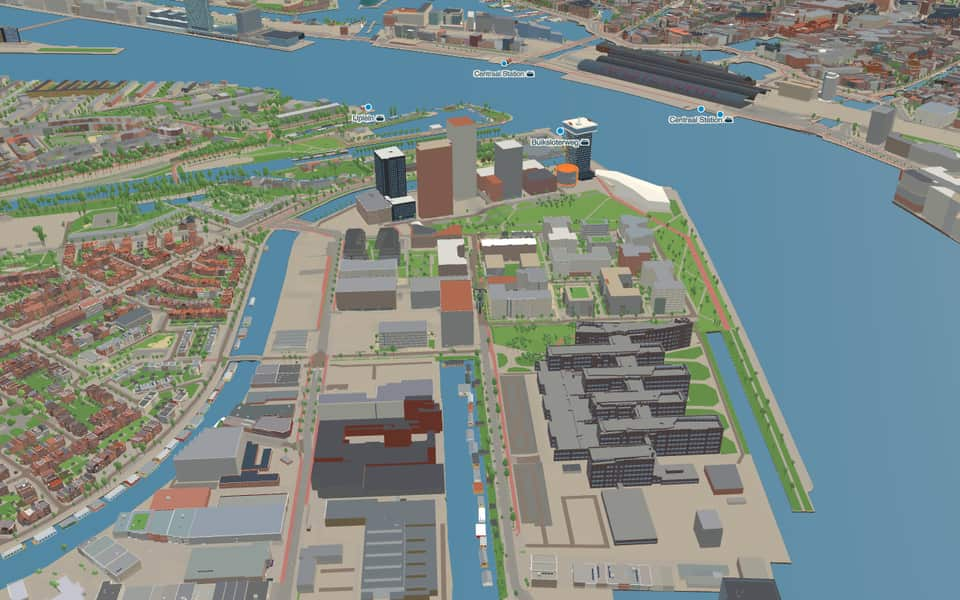
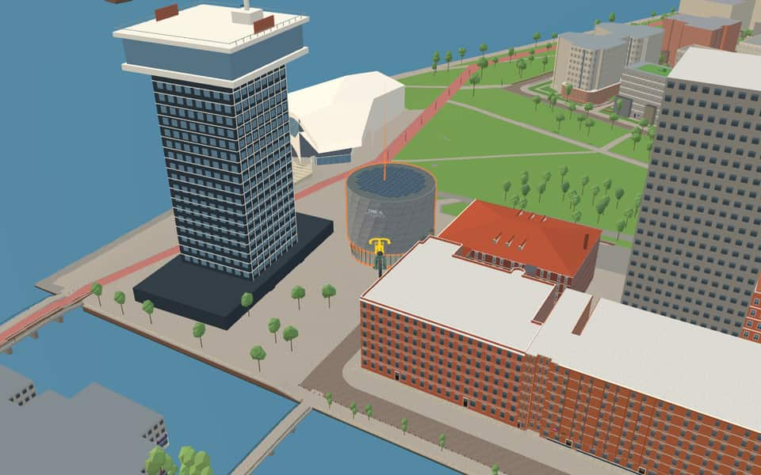
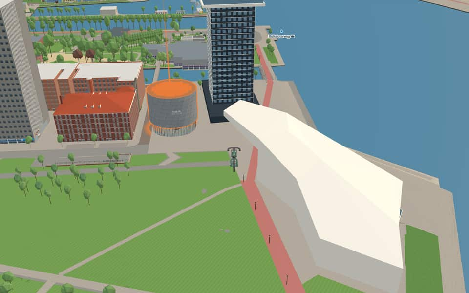
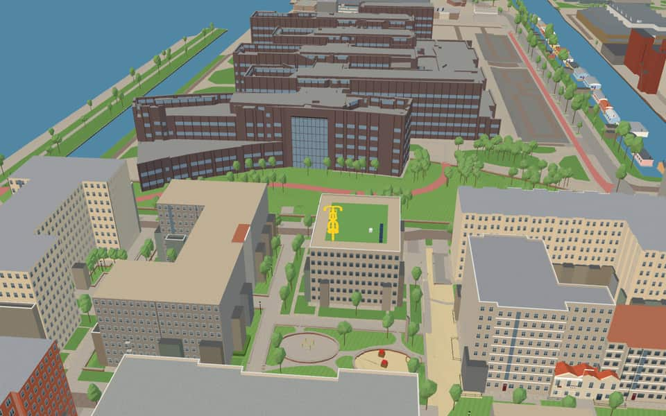

Neighbourhood · Amsterdam
Overhoeks
Overhoeks is a new mixed-use neighbourhood of Amsterdam, Netherlands in the borough of Amsterdam-Noord directly across the IJ river (technically a lake) from the city's central station. It is located on the former Royal Dutch Shell Research facility grounds. en.wikipedia.org
The name. Named after the Overhoeks tower, renamed A'DAM Toren in 2016. Most streets and squares in the area are named after urban waterfront developments around the world. nl.wikipedia.org
Ride Overhoeks7 modelled buildings · 13 facts · 18 name stories


In the game
Frames from a ride through Overhoeks.




6 more photos of Overhoeks


.jpg){kind=link}


.jpg){kind=link}


Built here
Buildings modelled one by one for the ride.
EYE Filmmuseum

A’DAM Tower
Shell Technology Centre Amsterdam

- No picture yet
BOLD, Bercylaan 801-855
- No picture yet
Céramiquelaan 437


Did you know
Trivia the ride can show you here.
- In 1913 thousands of Amsterdammers first set foot in the Buiksloterham, for the First Dutch Shipping Exhibition. Wikipedia (translated from Dutch)
- The Eye Filmmuseum's love of experimental cinema goes back to the weekly screenings it held at the Stedelijk Museum in the 1950s. Wikipedia
- Eye FilmmuseumVisitors can view roughly one hundred clips spanning silent eras and beyond within an immersive display. en.wikipedia.org
- This is HollandThe project was originally scheduled for 2015 but opened later after the developer faced bankruptcy. nl.wikipedia.org
- This is HollandEngineers Vekoma and Brogent Technologies constructed the simulator that cost eighteen million euros. nl.wikipedia.org
- Elsje ChristiaensbrugA nearby porter's house near the bridge was designated a municipal monument in 2013. nl.wikipedia.org
- VolewijckbrugVolewijckbrug received its current name in 2016, honoring the area's historic designation. nl.wikipedia.org
- VolewijckbrugThe completed bridge arrived by ship from Vlissingen and was installed on site in May 2009. nl.wikipedia.org
- VolewijckbrugThe number 0995 appears on the landheads, though its specific meaning remains unknown. nl.wikipedia.org
- IJThe largest part of the IJ was reclaimed between 1865 and 1876 to create new polders. en.wikipedia.org
- IJThe Buiten-IJ hosted mixed dinghy sailing events during the 1928 Summer Olympics in Amsterdam. en.wikipedia.org
- IJOranjesluizen locks divide the waterway into an inner section and an outer extension. en.wikipedia.org
- IJThe western part connects directly to the North Sea Canal while the eastern side extends the IJmeer. en.wikipedia.org
Names on the map
Where the canal, bridge and street names come from.
Canals and water
1 other canal without a recorded story
IJ
Bridges
- Elsje ChristiaensbrugElsje Christiaens was an 18-year-old Danish girl who was strangled on the Dam in 1664 because she had killed her landlady with an axe. She was hanged on the gallows field.Bridge 2474: a reinforced concrete bridge for cyclists, dated 1950 in the city's bridge register.
- VolewijckbrugThis bridge is named after De Volewijck, a small peninsula in the IJ rich in birds, over which the city gained authority in 1393. Until 1795 a mass gallows with stakes stood on this land, on which the bodies of criminals hanged on the Dam were displayed.Bridge 2475: a reinforced concrete bridge for cyclists, dated 2010 in the city's bridge register.
Streets
- AsterwegOrnamental plant belonging to the daisy family.
- BadhuiskadeNamed after the former Obelt bathhouse, built in 1914 and demolished around 1927. The road is no longer a public road and lies entirely on the grounds of the Shell laboratory.
- BatteryparkstraatWaterfront development at the southern tip of Manhattan (New York City). It is a park named after the battery of cannons that Dutch colonists placed there in the 17th century, and it was partly built with the labour of enslaved people. In the 19th century the area was transformed into a public city park, and in the late 20th century it became an example of urban redevelopment.
- BercylaanA district along the Seine in south-east Paris, where many wine warehouses once stood along the river. Large-scale renovation took place there at the end of the twentieth century.
- BundlaanAn important street in Shanghai along the Huangpu River, thoroughly revitalised since the 1980s.
- CéramiquelaanA district on the Maas in Maastricht, named after the demolished Société Céramique pottery works. In 1987 its present buildings were developed by architects such as Aldo Rossi and Jo Coenen.
- DocklandswegA former industrial port area on the Thames in south-east London, redeveloped since the 1980s into an area for living and working. Also a district of Dublin where large-scale renewal projects have begun.
- GraswegThe commonest and largest plant family (grasses).
- HammarbystraatA waterside district in south Stockholm that has been renovated and redeveloped since the 1990s.
- IJpromenadeThe IJ was once an arm of the Zuiderzee. In 1865-1872 it was reclaimed when the Noordzeekanaal was built, and in 1872 it was closed off from the Zuiderzee by the IJdijk and the Oranjesluizen.
- LidostraatA long island in the Venetian lagoon, where large-scale renovation took place around 2012.
- OverhoeksparklaanOn this site stands the high office tower of the same name that Arthur Staal designed for Shell in 1966. The term 'overhoeks', meaning 'set diagonally', refers to the building's orientation to the city and the water.
4 more streets with a story
- OverhoekspleinOn this site stands the high office tower of the same name that Arthur Staal designed for Shell in 1966. The term 'overhoeks', meaning 'set diagonally', refers to the building's orientation to the city and the water.
- SausalitolaanA town on San Francisco Bay, whose waterfront promenade is being renovated in the second decade of the twenty-first century.
- SpadinalaanAn area in south Toronto on Lake Ontario, being redeveloped since the start of the twenty-first century.
- TolhuiswegAfter the inn Het Tolhuis, once a much-frequented place, built in 1662 when a carriage road was laid out here and a toll introduced. From 1887 to 1912 the celebrated concerts of the then popular Seventh Regiment under bandmaster Joh. Zaagmans were given in its garden.
1 other street without a recorded story
Graspark